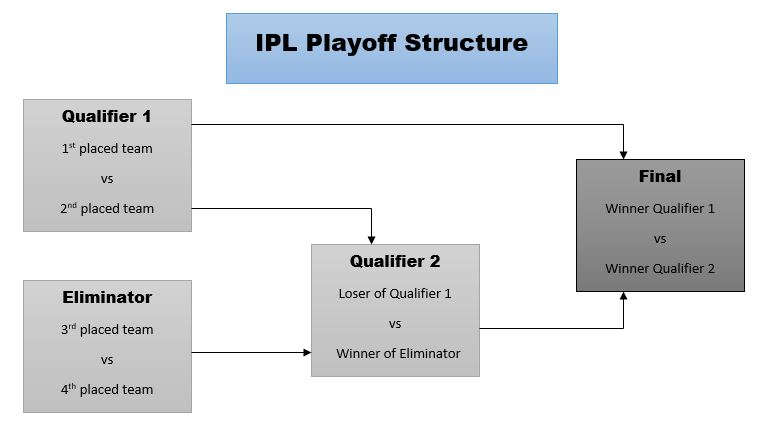
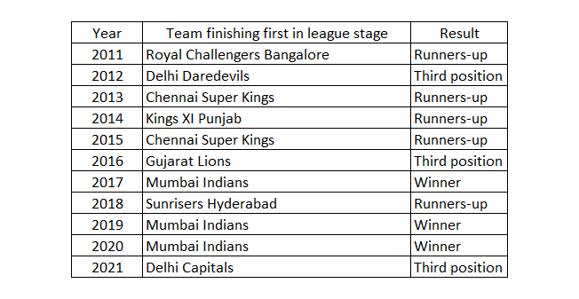
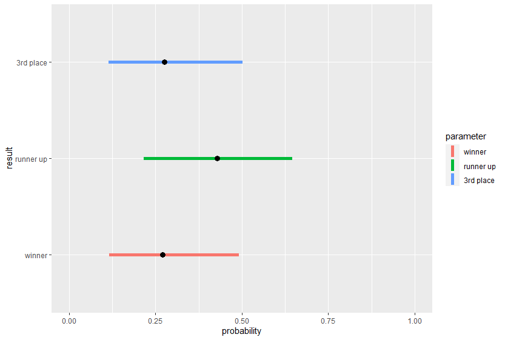
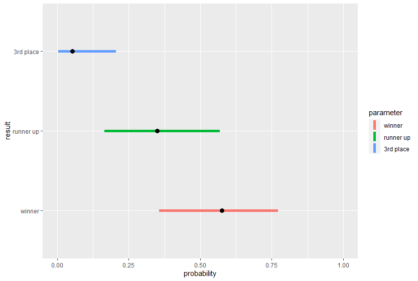

Indian Premier League (IPL) is an annual cricket league which is played under the T20 format. It was started in the year 2008 and has quickly gained popularity among cricket playing nations and has probably become one of the biggest sporting event in the Indian sports calendar.
The tournament is played between various teams based out of different cities in India. IPL is currently in its 14th season where the tournament has been played with 8 teams from 2008 - 2010 and 2014-2021. It was played with 10 teams in 2011 and 9 teams in 2012 and 2013. From 2022, it has been expanded again to 10 teams.
The tournament followed a double round-robin format from 2008 - 2021 (except for the year 2011) where each team plays the other team twice (once at each team’s ‘home’ ground). From the year 2022, the teams are divided into two groups and every team plays 14 games (twice against the teams in the same group, twice against one team from other group and once against the other teams from the other group). At the conclusion of the league stage, the top four teams qualify for the playoffs. For the first 3 years (2008-2010), the traditional semifinals and final approach was considered. From 2011, a playoff structure was introduced to award the top two teams with an additional chance to reach the finals. This ensured the competition stays relevant till the last game of the league stage as teams vie for top 2 position. The figure below explains the playoff structure.

The top two teams of the league stage have two chances to reach the final. The thought behind this playoff structure was that the top two teams should not be out of the tournament due to one bad day in the semi-finals.
A question that pops up in the mind is “Does the best team win the tournament”. In other words, does the team which finishes the league stage at the top of the table have the best chance to win the league. The team which finishes the league stage position 1 has won the most number of points (and in case of tied points, has a superior net run rate) and hence is considered the “best” team in the league. We would be tempted to say yes. But let’s find out what the data says.
We have the data available for 11 years (2011 - 2021) for the league stage standings and the playoff results for the team topping the league stage from IPL official website which can be seen below

We can observe, the team which tops the league stage has won the tournament only three 3 of 11 times which corresponds to approximately 27.27%. However, this is just the observation from 11 years so cannot be considered as the best indicator of probability. We will consider a Bayesian statistical model to calculate the probability of the team finishing the tournament as winner, runners up and third place.
In simple terms, a Bayesian model is reconciliation of our belief ( ‘prior’ distribution) with the observed data (likelihood) to give the updated belief (‘posterior’ distribution). Here the information (prior, likelihood and posterior) is in the form of mathematical distribution functions.
If we consider the random variable ‘result’ which indicates the position of the team at the end of the tournament. The team which finishes the league stage at the top of the table can finish at any position from 1 to 3 at the end of the tournament where 1 stands for winner, 2 stands for runner’s up and 3 stands for 3rd place. Since the variable can take only 1 out of the 3 values, it follows a categorical distribution which is denoted as result ~ categorical(\(p_{1}, p_{2}, p_{3}\)) where \(p_{1}\), \(p_{2}\) and \(p_{3}\) indicates the probability of finishing at each of the position at the end of the tournament.
We will consider the probabilities as a random variable as well. We have to assign a distribution to the variable in such a way that our beliefs are reflected in the distribution. We will consider the team has an equal chance at finishing at each of the positions. This ensured by assigning a Dirichlet(1,1,1) distribution to (\(p_{1}\), \(p_{2}\), \(p_{3}\))
So the model is as follows
\[result \overset{\mathrm{i.i.d.}}{\sim} Categorical(p_{1}, p_{2}, p_{3}) \]
\[(p_{1}, p_{2}, p_{3}) \sim Dirichlet(\alpha_{1}, \alpha_{2}, \alpha_{3}) \]
We run this model on 11 years of the data available (2011 - 2021) and we get the credible interval for the posterior probabilities of finishing at each of the position

The horizontal line indicates the plausible values for the probability of team finishing in a particular position and black point indicates the estimated value of the probability from the available data and model used.
We can see the probability of being runner up is higher than the probability of finishing as winner or 3rd place which seem to have almost the same probability. This means the team finishing at the top of the table at the end of the league will more often go on to lose in the playoffs (finish as runner up or \(3^{rd}\) place) at the end of the tournament.
Isn’t it surprising? It surely is. Let us look at some of the reasons this might be the case. More often than not, the team which finishes at the top of the table during the league stage accumulates most of the points during the early stages and tends to lose steam towards the business end of the tournament. It might be a case of peaking too early. There might be some other psychological impact that might be worthwhile to study.
So probably the best team in the league (team finishing first during league stage) does not win the tournament.!
Let us perform the same analysis for the team which finishes at second position in the league stage. We will use the same model used for the team finishing first at the league stage. Using data from 11 years, we get the following plot

We can see the probability of being winner is higher than the probability of finishing as runner’s up or 3rd place. This means the team finishing second in the league stage will more often go on to win the tournament. Surely a surprising result!